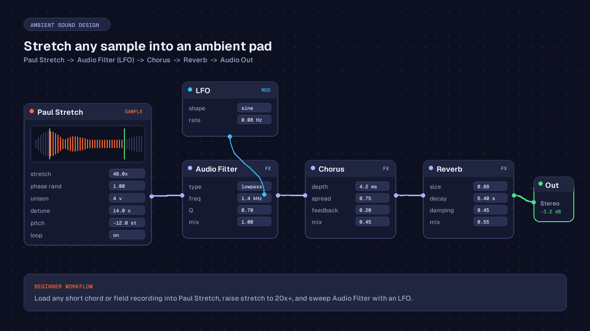

Creative
Stretch any sample into an ambient pad
Turn any short voice memo, guitar chord, or field recording into a lush ambient pad in Infinite using Paul Stretch, Audio Filter, Chorus, and Reverb.

on this page
One of the quickest ways to build a lush ambient pad is to start with a tiny, everyday sound instead of a complex synth. A single strummed guitar chord, two seconds of a piano note, a hummed vocal, or a rainy street recording can be slowed down into a drifting, cloud-like bed of sound.
In Infinite, you can stretch a sample into an ambient pad right on the canvas using the Paul Stretch node, then shape and widen it with Audio Filter, Chorus, Reverb, and a slow LFO.

1. Patch Paul Stretch to your speakers
Set up a simple left-to-right chain so you can hear your sound immediately as you shape it:
- Drop a Paul Stretch node, an Audio Filter node, a Chorus node, a Reverb node, and an Audio Out node onto the canvas.
- Connect the output of Paul Stretch to the input of Audio Filter.
- Connect Audio Filter to Chorus, Chorus to Reverb, and Reverb to Audio Out.
If you want to layer your pad underneath drums or a melody later, place a Mixer node right before Audio Out so multiple instruments can share the same output. Our guide on how to make your first beat and synth bassline shows how Mixer brings tracks together.
2. Load a sample or record straight off the canvas
At the top of Paul Stretch, click Load... and choose any WAV, AIFF, FLAC, or MP3 file from your computer. Short, tonal clips work wonderfully: a single acoustic chord, a bell hit, or a vocal phrase.
You can also capture audio live from another node on your canvas:
- Connect any synth or player node into the record in pin on Paul Stretch.
- Click Record, play a note or chord, and click Stop when you have a couple of seconds captured.
Once your clip is loaded, turn on the loop toggle at the top right of Paul Stretch and click Audition to hear it play continuously.
3. Stretch time and thicken the texture
Unlike normal speed controls that make a sound choppy when slowed down too far, Paul Stretch smooths the sound out into a continuous wash. Start with these four controls inside the node:
- Pick your slice with start and end. Drag start and end to frame the sweetest part of the waveform, skipping any silent lead-in or harsh pick click at the beginning.
- Raise stretch. Push stretch up to
20.0x,50.0x, or even higher. A two-second chord quickly turns into a slow-moving, minute-long harmonic cloud. - Keep phase rand high. Leaving phase rand near
1.00blurs sharp edges so the stretched sound feels like a soft pad rather than a pulsing loop. - Add voices with unison and detune. Increase unison from
1up to4or6voices, then nudge detune up slightly. This stacks slightly offset copies of your sound for an immediate wide, choral shimmer.
You can also adjust pitch in semitones if you want to drop a bright chime an octave lower (-12.0 st) into a deep, warm drone.
4. Soften the edges with Audio Filter and an LFO
Stretched samples can sometimes carry bright upper frequencies that compete with vocals or lead melodies. Audio Filter tames that brightness and lets the pad breathe:
- Keep type on a low-pass mode, then roll freq down until the harsh top end disappears and only a warm body remains.
- Drop an LFO node above Audio Filter.
- Drag a cable from the output of LFO onto the modulation dot next to the freq knob on Audio Filter.
- Set the LFO rate to something very slow so the filter opens and closes gently over several bars, giving your pad slow, organic movement.
5. Widen and place it in space with Chorus and Reverb
To finish the sound, Chorus adds gentle stereo motion and Reverb places the pad in a wide room:
- On Chorus, keep depth and spread moderate so the stereo image feels wide without wobbling out of tune.
- On Reverb, bring up size and decay for a long tail, set damping to soften high frequencies as the tail fades, and adjust mix to taste.
If you want to explore more instruments and effects to pair with your pad, the musicians guide covers the rest of the audio nodes in Infinite.
Ready to try this on your own recordings? Download Infinite for macOS, Windows, or Linux, or open a starter patch from the preset library to hear how ambient chains are put together.